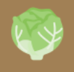
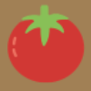
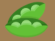
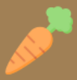

|  | Exemples de légumes feuilles : salades (laitue, cresson, mâche, frisée,...), endives, épinards, choux de Bruxelles, bettes, etc |
|  | Exemples de légumes fruits : tomates, concombres, aubergines, piments, courgettes, avocats, courges, etc |
|  | Exemples de légumineuses : petits pois, fèves, haricots blancs/rouges, etc |
|  | Exemples de légumes racines : carottes, navets, betteraves, panais, radis, céleri-rave, etc |